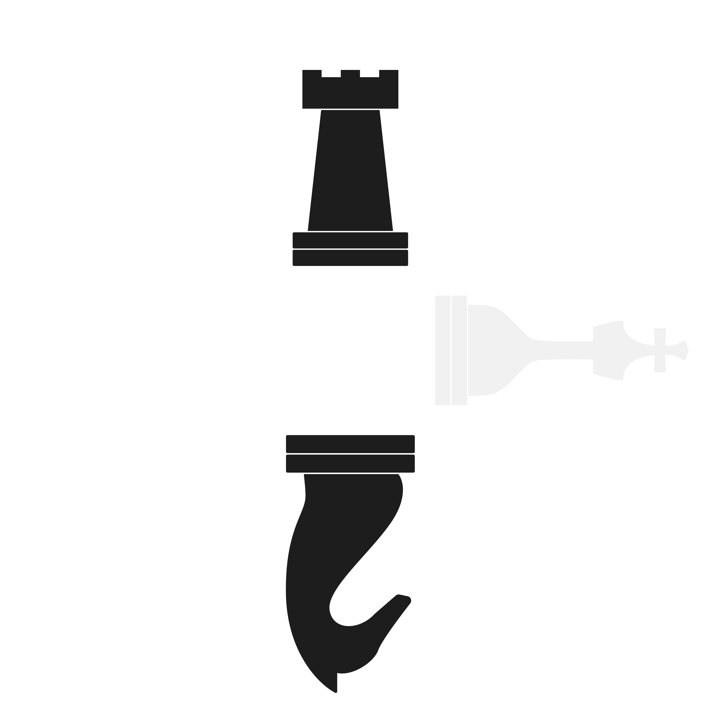
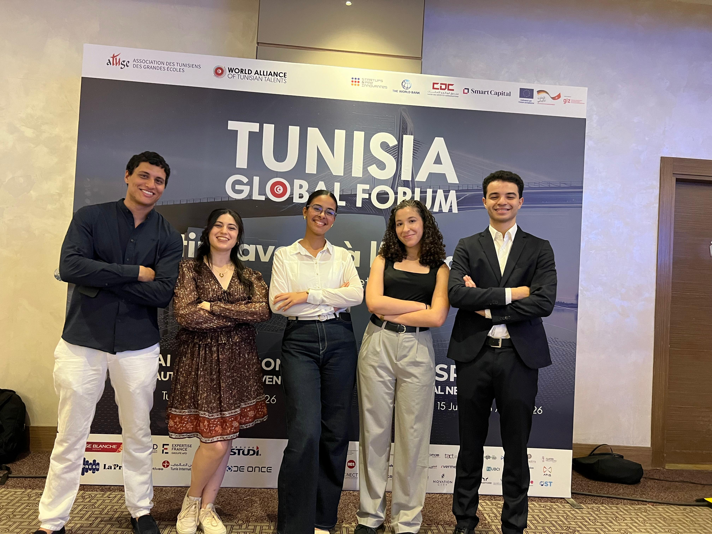

Typhoon.
Over 50+ assureurs nous accompagnent déjà : la plateforme de référence pour l'évaluation des risques climatiques.

- Allianz France
- Generali
- Groupama
- MAIF
- Matmut
- MACIF
- Covéa
- Swiss Re
- Munich Re
Ce que les assureurs disent de nous
“Before Typhoon, evaluating climate risk meant juggling scattered data sources and weeks of manual work. With the Typhoon platform, our actuaries get a precise, auditable score for every asset in minutes. Perfect!”
Ce que les assureurs disent de nous
"With Typhoon, our underwriting decisions are grounded in rigorous, transparent climate models. I can focus fully on my business, safe in the knowledge that our whole portfolio is well assessed."
Ce que les assureurs disent de nous
“Before, I had to rely on standard reports that never reflected my portfolio. With Typhoon, I have the feeling the platform knows our climate exposure better than I do!”


Nous vous accompagnons in
sur ces 6 domaines
Évaluation des risques inondation
Tout ce qu'il faut pour évaluer précisément le risque inondation de chaque bien. Notre modèle multi-critères intègre la topographie, les précipitations et les antécédents de sinistres pour une fiabilité optimale.

Analyse du risque Retrait-Gonflement d'Argile
Analyser précisément le risque RGA grâce à notre base de données géologiques. Cartographiez les zones de retrait-gonflement et obtenez une évaluation fiable de l'exposition de chaque bien immobilier. Anticipez les sinistres liés aux mouvements de sol.
Scoring multi-périls (tempête, grêle, neige)
Un scoring unique pour chaque bien face aux aléas climatiques. Tempête, grêle, neige : notre algorithme agrège les données historiques et les projections pour vous offrir une vision globale des risques.
Modélisation climatique 2050
Des projections climatiques à l'horizon 2050 : anticipez l'évolution des risques grâce à nos modèles climatiques avancés. Intégrez les scénarios GIEC dans votre stratégie de gestion des risques dès aujourd'hui.
Conformité réglementaire & reporting
Répondez aux exigences réglementaires grâce à nos rapports automatisés. Conformité aux normes Solvabilité II, reporting ESG et documentation complète de votre analyse des risques climatiques.

Protection du patrimoine assurantiel
Protégez votre portefeuille grâce à une évaluation systématique des risques climatiques. Identifiez les biens vulnérables, priorisez les actions de mitigation et optimisez votre couverture assurantielle.

Consultations
Chaque assureur arrive au point où une évaluation sommaire des risques ne suffit plus. Face aux défis du changement climatique, vous avez besoin d'un outil stratégique pour piloter votre exposition aux aléas naturels.
Et oui, nous le savons : le climat est un sujet complexe pour la plupart des assureurs. Mais c'est justement pour cela que nous existons.
clients satisfaits
digital
Ce que nous faisons : Transformer la complexité en décisions claires. Pour que vous puissiez être 100% sûr que votre portefeuille est évalué avec la meilleure technologie disponible.
Autant de sécurité que possible. Aussi peu de données que nécessaire.
Notre approche est minimaliste. Nos clients aiment la fiabilité. Nous n'utilisons que les données vraiment pertinentes pour évaluer vos risques.
Une réponse qui vous aide vraiment. En quelques minutes.
Lorsqu'il s'agit d'évaluer un risque, vous ne voulez pas attendre des jours. C'est pourquoi vous obtenez un rapport complet en quelques minutes.
Une plateforme. 100% digitale. Service complet.
Fini les tableaux Excel et les documents papier. Nous vous offrons un tableau de bord unique pour tous vos risques et une solution 100% digitale.

Nous comprenons le risque dans toutes ses dimensions.
Nous sommes des experts en analyse de risques. Nous n'évaluons pas seulement un bien, nous regardons l'intégralité de votre portefeuille pour une protection optimale.
Nous vous accompagnons
sur ces 6 domaines
Analyse du risque Retrait-Gonflement d'Argile
Analyser précisément le risque RGA grâce à notre base de données géologiques. Cartographiez les zones de retrait-gonflement et obtenez une évaluation fiable de l'exposition de chaque bien immobilier. Anticipez les sinistres liés aux mouvements de sol.
Protection du patrimoine assurantiel
Protégez votre portefeuille grâce à une évaluation systématique des risques climatiques. Identifiez les biens vulnérables, priorisez les actions de mitigation et optimisez votre couverture assurantielle.
Chaque assureur arrive au point où une évaluation sommaire des risques ne suffit plus. Face aux défis du changement climatique, vous avez besoin d'un outil stratégique pour piloter votre exposition aux aléas naturels.
consultations
clients
satisfaits
Et oui, nous le savons : le climat est un sujet complexe pour la plupart des assureurs. Mais c'est justement pour cela que nous existons.

d'administration
en moins
digital
Ce que nous faisons : Transformer la complexité en décisions claires. Pour que vous puissiez être 100% sûr que votre portefeuille est évalué avec la meilleure technologie disponible.
Autant de sécurité que possible. Aussi peu de données que nécessaire.
Notre approche est minimaliste. Nos clients aiment la fiabilité. Nous n'utilisons que les données vraiment pertinentes pour évaluer vos risques.
Nous comprenons le risque dans toutes ses dimensions.
Nous sommes des experts en analyse de risques. Nous n'évaluons pas seulement un bien, nous regardons l'intégralité de votre portefeuille pour une protection optimale.
Comment ça marche
Nous analysons votre portefeuille
Pour que notre collaboration soit vraiment efficace, nos experts analysent l'état actuel de votre portefeuille de biens de manière précise et individualisée.
Une cartographie des risques sur mesure
Dans un second temps, nous concevons une cartographie des risques vraiment adaptée et optimisée pour vous et votre portefeuille.
100% digital & analyse instantanée
Notre collaboration est une promesse : vous n'avez rien à gérer. Plus de piles de documents papier, tout le processus est 100% digital et automatisé.
Un suivi continu & des alertes en temps réel
Une fois votre stratégie d'évaluation des risques déployée, nous surveillons l'évolution de votre portefeuille et vous tenons informé en permanence.

À propos
Nous accompagnons les assureurs et gestionnaires de biens dans l'évaluation des risques climatiques depuis plus de 5 ans, mais nous ne sommes pas seulement des consultants, nous sommes des experts en modélisation climatique.
Nous avons développé une plateforme innovante qui intègre les dernières projections climatiques pour une évaluation précise de chaque bien.
Contactez-nous
1. Réservez un appel
Réservez un appel pour une démo gratuite de notre plateforme - c'est simple et sans engagement.
2. Audit de votre portefeuille
Nous vous contactons à la date souhaitée pour analyser vos besoins spécifiques.
3. Mise en place
Nous détaillons vos besoins et vous conseillons sur les indicateurs vraiment pertinents pour votre activité.
Contactez-nous

3. Mise en place
Nous détaillons vos besoins et vous conseillons sur les indicateurs vraiment pertinents pour votre activité.
Le climat ne peut pas attendre.
Passez à l'action.
Réservez une démo gratuite.
